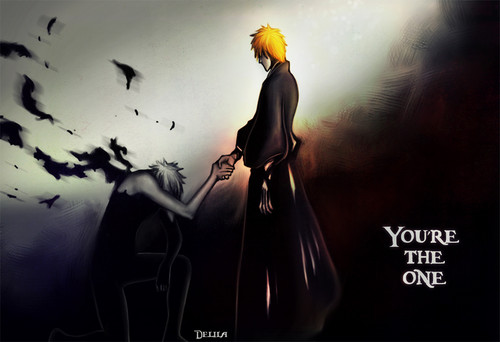

Bleach is a Japanese anime television series based
on Tite Kubo 's original manga series of the same name. It was produced by
Studio Pierrot and directed by Noriyuki Abe. The series aired on
TV Tokyo from October 2004 to March 2012, spanning 366 episodes.

The series adapts Kubo's manga with the main story arcs and
introduces anime exclusive ones. In Karakura Town, high
school student Ichigo Kurosaki becomes a substitute Soul Reaper